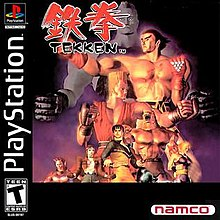
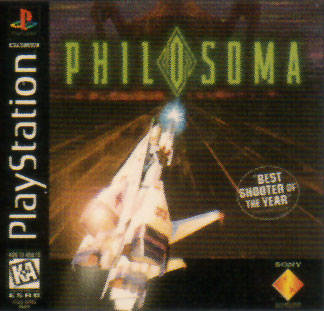
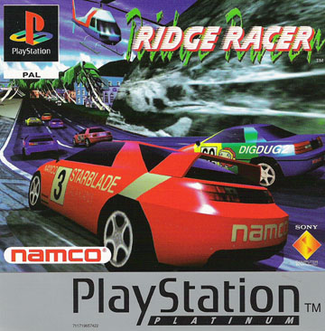

A PlayStation megjelenése
A konzol Japánban 1994 december 4-én, Észak Amerikában 1995 szeptember 9-én, Európában 1995 szeptember 29-én jelent meg. Az első játékok fejlesztői leginkább a Namco és a Sony voltak. Az első játékok között szerepelt a Tekken, a Battle Arena Toshinden, a Warhawk, az Air Combat, a Philosoma és a Ridge Racer. A Namco játékok többsége az akkori játéktermi programok direkt átiratai voltak. Ez is nagyban hozzájárult a gép sikereihez.
A PlayStation erősségei között említhetjük a 3 dimenziós grafikát, a CD-ROM technológia által nyújtott hang és képminőséget. A Sony reklámkampányaiban szándékosan nem csak a gyerekeket, hanem az idősebb korosztályt is megszólította.
A konzolozás ebben az időszakban kezdett kinőni a
gyerekcipőből és tette hétköznapivá ezt a fajta szórakozást.
A PlayStation további verziói:
- PlayStation 2 (2000)
- PlayStation 3 (2006)
- PlayStation 4 (2013)
- PlayStation 5 (2020)